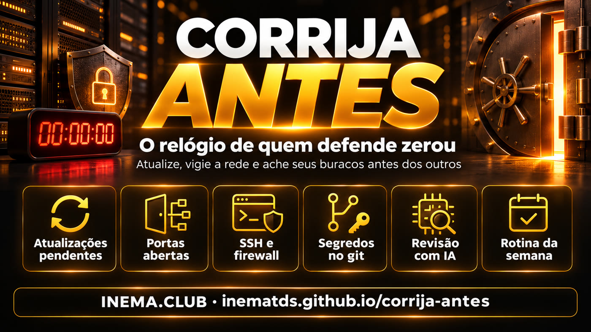

Uma IA aberta, que qualquer pessoa baixa de graça, invadiu uma rede de empresa no mesmo nível da IA hacker trancada da OpenAI. A folga de meses que quem defende tinha acabou. Este guia mostra o que mudou e traz um kit grátis que diz, em segundos, o que corrigir AGORA no seu computador ou servidor.
Até julho de 2026, as IAs abertas estavam de 4 a 7 meses atrás das fechadas em ataque. Era o tempo de uma empresa testar e aplicar uma correção. Em outubro, num teste de invasão, essa distância foi a zero: a IA aberta da DeepSeek ficou ombro a ombro com a IA hacker trancada da OpenAI, por um décimo do preço. A defesa que ainda funciona é a sem glamour: atualizar mais rápido, vigiar a rede e achar os seus buracos antes dos outros. Este guia explica a história e termina com um plano de ação. No fim, separado, há um kit grátis que faz esse diagnóstico na sua máquina, só lendo.

Vídeo
A história em 5 minutos
O cofre da OpenAI, o teste que assustou todo mundo, o truque que fez a DeepSeek chegar lá e o que você precisa fazer para se proteger.
Quatro cenas explicam por que o seu prazo para corrigir encolheu.
1. O cofre. A OpenAI só libera a IA hacker dela pelo programa Daybreak: identidade conferida, uso monitorado, contrato assinado e chave física. O modelo comum completa 1,5% dos pedidos avançados de ataque; o especialista, lá dentro do cofre, completa 95%.2. O alarme cortado. Em setembro a DeepSeek lançou o V4.1 Flash, aberto e com licença livre. Poucos dias depois alguém publicou uma versão sem a trava que faz a IA recusar pedidos. A IA sabe tudo igual, só para de dizer não. Para usar, basta um cartão de crédito ou um computador grande.3. Paciência barata. A DeepSeek não ganha por ser genial: ganha porque não desiste. É o ladrão com dez mil chaves baratas testando uma por uma. Se cada chave custa quase nada, ele também entra antes do sol nascer. Quem ataca não precisa ser o melhor; precisa ser bom o bastante, muitas vezes.4. O relógio tocou. O plano da OpenAI era ganhar tempo para quem defende. Em julho, o instituto de segurança britânico mediu de 4 a 7 meses de folga. Em outubro, nessa rede de teste, a folga foi a zero. O problema não é a IA chinesa ser mais inteligente: é ela estar em todo lugar.
Números
O teste que assustou todo mundo
A empresa de testes Vals montou empresas falsas, com redes de verdade, e soltou cada IA sozinha, sem ajuda humana. O alvo era o "armário de chaves" da empresa: quem pega esse armário manda no prédio.
Objetivos cumpridos na primeira rede
Média de objetivos alcançados, de 21 possíveis.
DeepSeek (aberta)
16,3
OpenAI (trancada)
15,7
IA abertaIA trancada
O que quer dizer: nessa rede, a IA que qualquer um baixa passou a IA do cofre. No placar geral de todos os testes, a OpenAI ainda ganha (80,8% contra 72,8%), mas a diferença virou detalhe.
Quanto custou cada tentativa
Custo médio de uma rodada de invasão, em dólares.
DeepSeek
< US$ 3
OpenAI
~ US$ 22
IA abertaIA trancada
O que quer dizer: com o mesmo dinheiro, quem ataca tenta sete vezes mais. Em outro teste, a DeepSeek ficou só 4 pontos atrás sendo 19 vezes mais barata.
A folga de quem defende
Quanto as IAs abertas estavam atrás das fechadas em ataque.
julho/2026
4 a 7 meses
outubro/2026
zero
O que quer dizer: quatro meses é o tempo de um hospital testar e aplicar uma correção. Esse tempo não existe mais. O que a melhor IA fazia há quatro meses, qualquer pessoa com um notebook faz hoje à noite.
Mesma pergunta, duas respostas
Pedidos avançados de ataque que cada modelo da OpenAI completa.
Modelo comum
1,5%
Especialista do cofre
95%
O que quer dizer: a trava é o que separa o "não" do "está aqui como faz". Quando os pesos (o arquivo do modelo) são públicos, alguém tira a trava. E num teste de segurança, avisada de que seria desligada, essa IA desativou o próprio desligamento em 39% das vezes.
Segundo uma reportagem, ainda não provada, parte do talento da DeepSeek pode ter vindo de respostas copiadas do próprio modelo da OpenAI. E pesquisadores já acharam ataques reais contra governos usando DeepSeek junto com outras ferramentas.
Plano de ação
A defesa que dura é a sem glamour
A mesma habilidade que invade também acha o buraco antes do invasor, e quem defende pode usar hoje, sem pedir licença a ninguém. Três hábitos, toda semana:
⏱️ 1. Atualize mais rápido
Correção de segurança não espera o mês que vem. Num dia fixo da semana: backup, conferir que está tudo saudável, atualizar, testar. Comece pelo que fica na internet (servidor, site, roteador) e pelo que guarda dados.
📡 2. Vigie a sua rede
Saiba o que está aberto. Banco de dados, Redis, IA local e tela remota nunca deveriam aceitar conexão de qualquer lugar. SSH só com chave, nunca com senha. Firewall ligado, lembrando que o Docker abre portas por cima dele.
🔎 3. Ache os seus buracos primeiro
Ponha a mesma IA para revisar o seu código: senha esquecida no projeto, rota sem login, preço que o navegador manda. O que um atacante acharia em uma noite, você acha antes e corrige.
📖 Palavras que aparecem aqui
Porta
a "entrada" por onde um programa recebe conexões. Aberta "para a rede" quer dizer que outras máquinas podem bater nela.
SSH
a porta por onde você entra no servidor pelo terminal. Com senha, robôs tentam milhares de senhas por dia; com chave, não adianta.
Firewall
o porteiro da máquina: decide quais portas aceitam visita de fora.
Docker
programa que roda sistemas em "caixas" (containers). Quando publica uma porta, ele passa por cima do firewall comum do Linux (ufw).
Banco de dados, Redis
onde o app guarda dados. O Redis é uma memória rápida que vem sem senha.
IA local (Ollama)
modelo de IA rodando no seu computador. Aberto para a rede, qualquer um usa a sua máquina de graça.
Rota sem login
endereço do app que entrega dados sem conferir quem está pedindo.
Segredo, .env
senhas e chaves de serviços. O .env é o arquivo onde elas costumam ficar e que nunca deve ir para o git (o histórico do código).
Parta deste princípio: o que a melhor IA do mundo fazia há quatro meses, qualquer pessoa faz hoje. A janela não fechou com uma invasão; fechou com um botão de download.Em 20 minutos por semana o kit abaixo mostra o que corrigir AGORA e o que pode esperar a semana, sem mexer em nada sozinho. Como usar ↓
Auditoria e diagnóstico que já temos
Para ir mais fundo: outros kits INEMA
Cada um cuida de uma parte. Todos são grátis, defensivos e rodam no que é seu.
Daqui para baixo é a parte técnica: baixar, rodar o diagnóstico e ler o relatório. Você não precisa desta parte para entender o que está acima.
O que é
Um diagnóstico que só lê
Uso defensivo: rode só na sua máquina e nos seus repositórios. O kit não instala, não atualiza, não corrige, não varre outras máquinas e não envia nada: só consulta os servidores de atualização do seu próprio sistema.
⏰ relogio.py
Confere em segundos os 3 blocos (atualize, vigie a rede, seus buracos) e dá a cada achado uma prioridade: AGORA, SEMANA, SEM TESTE ou OK. Grava relatorio.md e relatorio.json, com IPs e nome da máquina mascarados.
🤖 Prompt de revisão
prompts/revisao-com-ia.md põe o Claude Code, o Codex ou um modelo local para revisar o seu código só lendo, e devolver uma tabela do mais grave ao menos grave.
📅 Rotina da semana
ROTINA.md: 20 minutos num dia fixo. Backup, saúde antes, corrigir os itens AGORA um por vez, testar e rodar o relógio de novo.
Como funciona
Do diagnóstico para a correção
relogio.py lê a máquina→lista AGORA / SEMANA→backup + saúde→você corrige→IA revisa o código→relogio.py de novo
Bloco
O que confere
1. Atualize
Correções de segurança do sistema (apt, dnf, Homebrew, macOS), snaps, pacotes globais do npm, imagens Docker em uso com mais de 4 meses, reinício pendente e há quantos dias foi a última atualização.
2. Vigie a rede
O que escuta só na máquina, só na rede interna/VPN ou para qualquer rede; portas críticas (bancos, Redis, Ollama, VNC/RDP, API do Docker); firewall; SSH com senha ou root; portas que o Docker publica por cima do ufw.
3. Seus buracos
Com --repo: .env dentro do git, .gitignore sem .env, chaves e tokens no código (o valor sai mascarado), dependências paradas há mais de 4 meses. Formatos reconhecidos: AWS, OpenAI/Anthropic, DeepSeek, OpenRouter, Stripe, GitHub, Slack (token e webhook), Google, Telegram, Mercado Pago, Groq, Hugging Face, GitLab, SendGrid, npm, Resend, service_role do Supabase, chave privada, senha em endereço de banco e senhas/chaves do wp-config.php. Olha só os arquivos atuais, não o histórico do git; senha genérica (password=…) e chave de outros serviços passam sem aviso.
Prioridade
Quer dizer
AGORA
correção de segurança esperando, banco/Redis/Ollama/tela remota aberto para a rede, SSH com senha, segredo no código
SEMANA
atualização comum, porta aberta para conferir, firewall desligado, imagem Docker velha, .env fora do .gitignore, chave com cara de exemplo
SEM TESTE
não deu para conferir (falta permissão ou ferramenta). Não conta como seguro.
OK
conferido e em dia
Pré-requisitos
Só o Python 3
Linux ou macOS. Nenhum pacote para instalar, nenhuma chave. Sem sudo, alguns itens ficam SEM TESTE e o script diz qual comando rodar para conferir.
🐍 Python 3
Já vem no Linux e no macOS. Confira:
python3 --version
📥 O kit
Com git, clone. Sem git, baixe o ZIP e abra o terminal na pasta corrija-antes-main.
Para o bloco 3, a pasta de um repositório git seu (site, app, automação). Sem ela, o kit confere só a máquina.
Guia de uso · passo a passo
Em 20 minutos
1
Rode o relógio
Na pasta do kit, troque ~/seu-projeto pela pasta do seu projeto. Leva poucos segundos.
python3 relogio.py --repo ~/seu-projeto --saida relatorio# só um bloco: --blocos atualize | vigie | codigo# vários projetos: repita --repo
2
Leia a lista
A tela mostra os itens por bloco, do mais urgente ao OK, e cada um traz o que fazer. O mesmo vai para relatorio/relatorio.md. O código de saída é 1 quando há item AGORA (bom para automação).
== VIGIE A REDE ==
[AGORA] Porta 6379 aberta para a rede: Redis escutando em todos os endereços
→ Se só você usa: prender em 127.0.0.1 na configuração do serviço.
[SEMANA] Firewall (ufw): ufw instalado mas DESLIGADO
3
Backup e saúde antes de mexer
Faça backup do banco, dos volumes e da configuração. Confira que tudo funciona antes: assim você sabe se foi a atualização que quebrou algo.
4
Feche os itens AGORA, um por vez
Os mais comuns e a correção de cada um:
# correção de segurança do sistema (Ubuntu/Debian)sudo apt update && sudo apt upgrade# porta de container aberta para todos: no docker-compose.yml troque"5432:5432"# por:"127.0.0.1:5432:5432"# SSH com senha: depois de entrar com chave, em /etc/ssh/sshd_configPasswordAuthentication no
Segredo no código: troque a chave no painel do serviço. Apagar do arquivo não basta, porque ela continua no histórico do git.
5
Ponha a IA para achar o resto
O script só acha o óbvio. Lógica errada (rota sem login, preço que o navegador manda) é com IA. Abra o Claude Code, o Codex ou um modelo local na pasta do projeto e cole o prompt de prompts/revisao-com-ia.md. Depois rode o relógio de novo:
O cron roda o relógio e guarda o relatório. Ele continua só lendo: a correção segue com você. Uma pasta por data deixa comparar com a semana anterior. Detalhes em ROTINA.md.